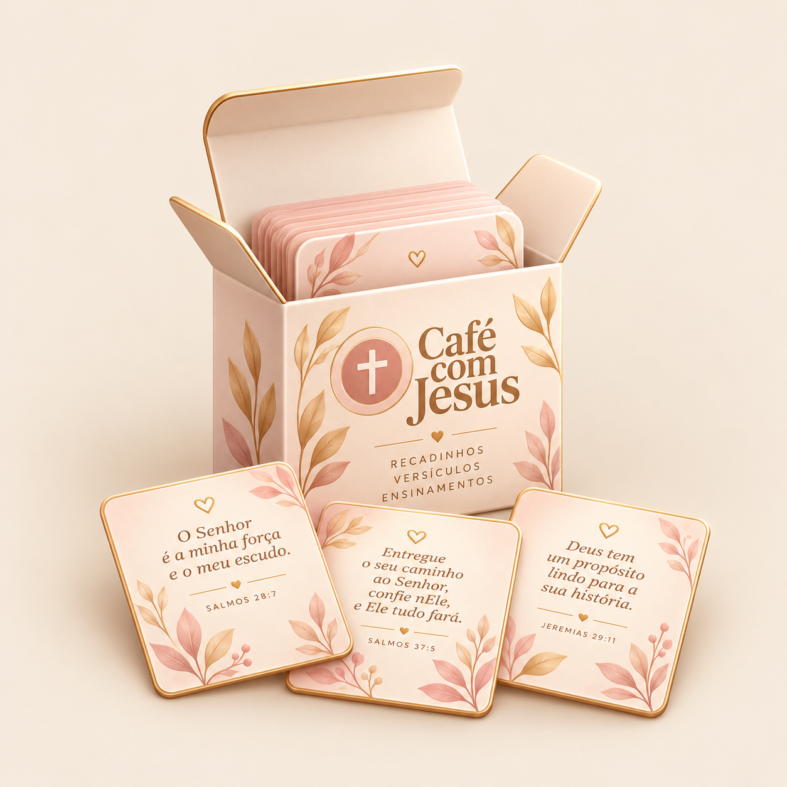
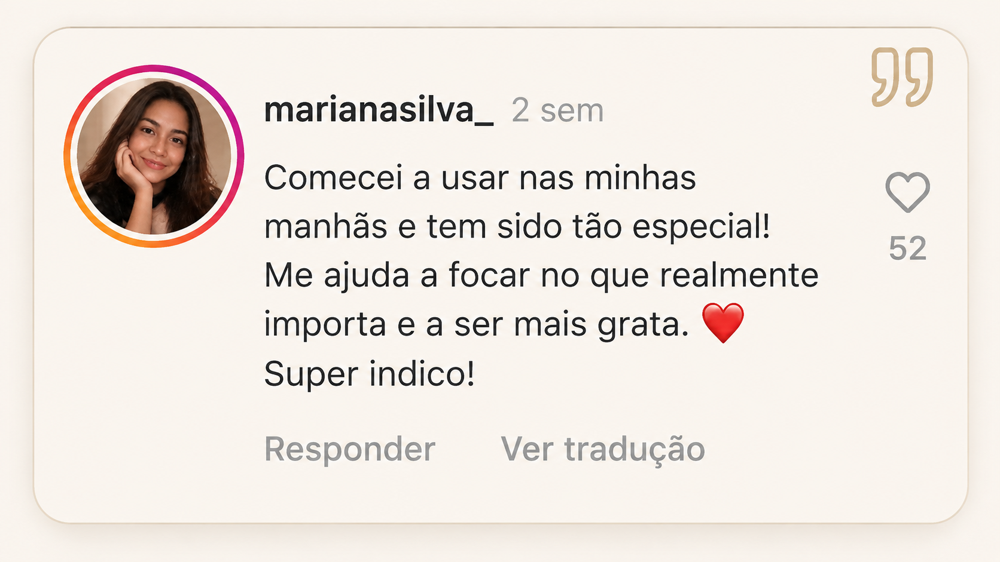
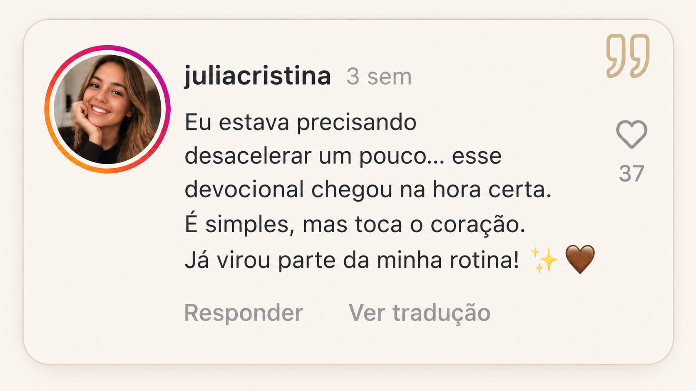
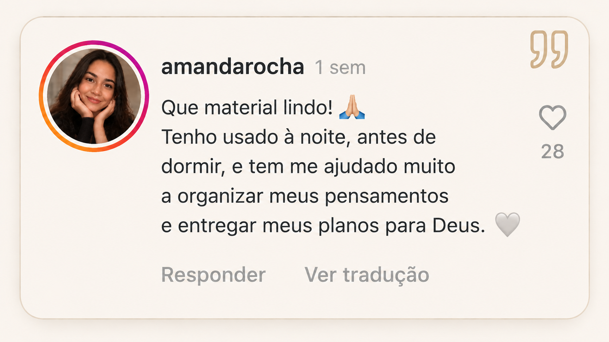

Uma rotina que nunca para
Trabalho, casa, família, mensagens, compromissos… parece que sempre existe alguma coisa precisando da sua atenção.
CAFÉ COM JESUS
Um devocional criado para mulheres que desejam desacelerar por alguns minutos, fortalecer sua fé e começar o dia com uma reflexão especial.
“Às vezes, tudo o que precisamos é parar… respirar… e conversar com Deus.”
Tudo isso por apenas R$5,90
QUERO TER MEU CAFÉ COM JESUSVocê acorda, olha o celular, começa a resolver problemas e, quando percebe, mais um dia terminou.
Trabalho, casa, família, mensagens, compromissos… parece que sempre existe alguma coisa precisando da sua atenção.
Mas muitas vezes não sabe como criar um momento de reflexão em meio a uma rotina tão corrida.
Um café, um lugar tranquilo e uma mensagem podem ser o começo de um novo hábito.
Um novo começo de manhã
Imagine começar a manhã sem correr direto para as notificações.
Você prepara o seu café, abre o seu Café com Jesus e separa alguns minutos para ler, refletir e conversar com Deus.
O conteúdo
Um material pensado para fazer parte da sua rotina.

Mensagens cuidadosamente organizadas para ajudar você a desacelerar e refletir sobre fé, vida, família, propósito, gratidão e esperança.
Transforme alguns minutos do seu dia em um espaço reservado para oração, reflexão e silêncio.
Use da forma que preferir: pelo celular, tablet, computador ou imprima suas páginas para criar o seu próprio cantinho devocional.
Seu café pode durar poucos minutos.
Mas esse momento pode mudar a forma como você começa o seu dia.
Passo a passo
Escolha um lugar tranquilo e prepare aquele café que você gosta.
Escolha a reflexão do seu momento.
Desacelere por alguns minutos e permita-se refletir.
Finalize o seu momento com uma oração e leve aquela mensagem para o restante do dia.
Bônus especiais
Um espaço complementar para registrar pensamentos, agradecimentos e reflexões especiais.
Um material complementar para organizar pedidos, agradecimentos e momentos que você deseja entregar a Deus.
Clique no botão desta página e finalize o seu pedido.
Após a confirmação do pagamento, as instruções de acesso serão enviadas conforme o sistema de entrega já configurado.
Abra o material pelo celular, tablet ou computador e, se desejar, imprima suas páginas.
Depoimentos



Um momento para você e Deus
Tenha em suas mãos um material criado para transformar alguns minutos comuns da sua rotina em um momento de fé, reflexão e oração.
CAFÉ COM JESUS
um momento entre você e DeusPagamento seguro • Acesso digital
um momento entre você e Deus
Tire suas dúvidas sobre o Café com Jesus